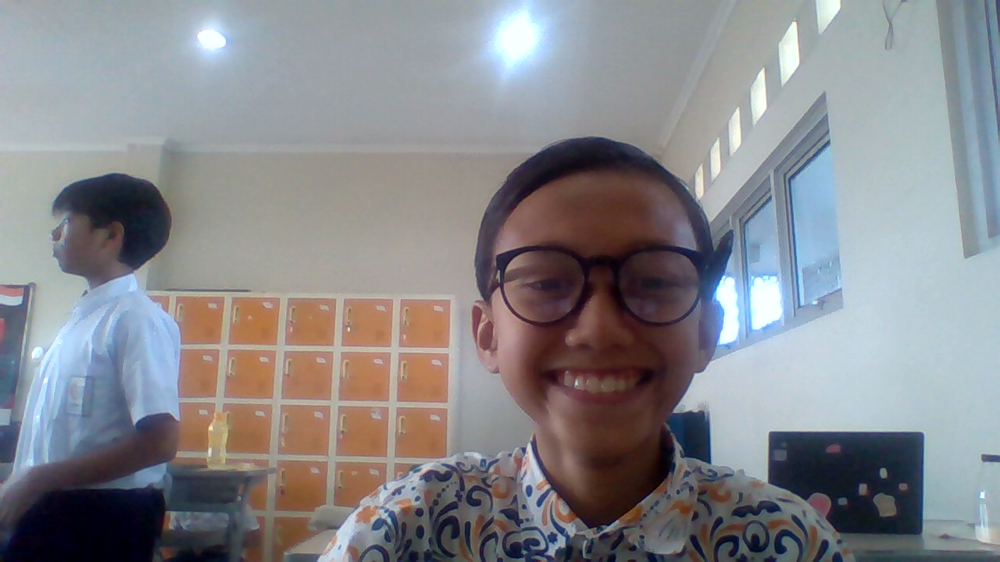

Nama saya Dzaky Haidar Lesmana, Kelas 9 Al-Fath, Sekolah SMPIT Al-Haraki. Asal saya dari Depok dan berumur 15 tahun.
Nama saya Dzaky Haidar Lesmana, biasanya saya dipanggil "Dzaky". Hobi saya berolahraga, bermain game, dan bermain gitar. Selain itu juga, saya suka membantu ibu saya untuk meringankan pekerjaan rumah tangga.
(Minat saya adalah Olahraga, Saya memiliki hobi bermain bola seperti basket maupun futsal dan bermain game, Kemampuan saya adalah menyampaikan ide dengan jelas dan mendengarkan secara aktif, Kemampuan berkolaborasi dalam sebuah tim untuk mencapai tujuan, Kreatif, Bisa bermain alat musik dan Melukis.
Cita-cita saya ingin masuk Politekim dan menjadi State Civil Servants dan harapan saya untuk ke depannya menjadi pribadi yang lebih mandiri dan baik.